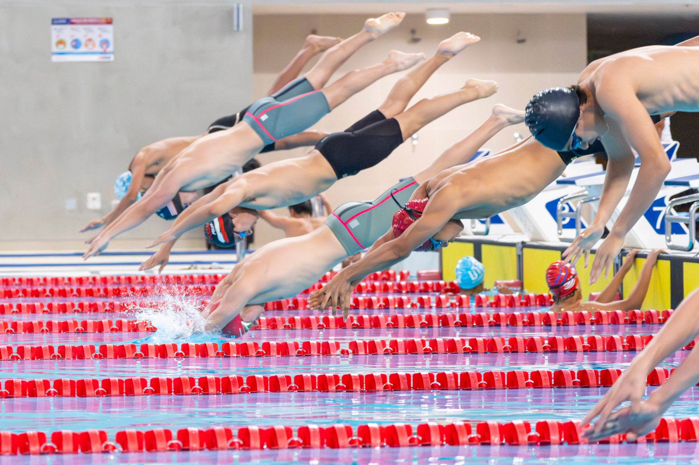

Championship Performances Remind Us What Youth Swimming Is All About
When the Marjory Stoneman Douglas High School swim teams recently made headlines — the boys claiming a city championship and the girls finishing a strong second place — it wasn't just exciting news for Parkland. It was a meaningful moment for young athletes and swim families all across Florida, including right here in the Tampa Bay area.
Results like these don't happen by accident. They are the product of consistent training, strong team culture, and the kind of passion for the sport that starts developing long before high school. For swimmers in Wesley Chapel, Land O' Lakes, and the surrounding communities, that journey can begin today.
What Championship-Level Swimming Actually Looks Like
It's easy to see a headline about a winning swim team and think the outcome was inevitable — that those athletes were simply the most talented. But coaches and experienced swimmers know the truth is more nuanced. Championship performances are built over seasons, not overnight.
Here are some of the key habits that separate competitive swimmers from the rest of the field:
- Consistent attendance at practice: Elite young swimmers rarely miss sessions. Repetition in the water is what builds muscle memory, improves stroke technique, and increases endurance over time.
- Focus on technique before speed: Fast times come from efficient movement. Swimmers who invest early in perfecting their strokes — freestyle, backstroke, breaststroke, and butterfly — have a natural edge as they grow and develop strength.
- Mental preparation: Racing is as much a mental challenge as a physical one. Learning how to manage nerves, stay focused during a race, and rebound from a disappointing time are skills that great swimmers develop intentionally.
- Recovery and rest: High-performing athletes understand that the body needs rest to improve. Proper sleep, hydration, and nutrition are not optional extras — they are essential parts of training.
- Team culture: Even in an individual sport, the team environment matters enormously. Swimmers who cheer for their teammates, hold each other accountable, and celebrate collective success tend to perform better individually as well.
The Tampa Bay Opportunity for Young Swimmers
The Tampa Bay area has long been a strong region for youth aquatic sports. With warm weather nearly year-round and a growing community of competitive families in places like Wesley Chapel and Land O' Lakes, young swimmers here have every advantage they need to reach high school — and beyond — ready to compete.
What the region needs is the right development environment: experienced coaches who understand how to work with youth athletes at different stages of growth, structured programming that challenges swimmers without burning them out, and a culture that makes the sport genuinely enjoyable.
That is exactly the philosophy behind Nexar Aquatic Academy. Whether a young athlete is just learning to love the water or is already dreaming of a varsity roster spot, the goal is the same — to build the foundation that makes those championship moments possible.
What Parents Can Do Right Now
If a story like the Marjory Stoneman Douglas swim team championship inspires your child — or inspires you as a parent — that energy is worth acting on. Here are a few practical steps to consider:
- Talk to your child about what excites them about swimming and what goals feel meaningful to them personally.
- Make sure they are training in an environment that prioritizes both skill development and a love of the sport.
- Connect with coaches who can give honest, constructive feedback as your swimmer grows.
- Celebrate progress, not just results — improvement in the water is always worth recognizing.
Championships happen to teams that do the right things, day after day, season after season. At Nexar Aquatic Academy, we believe every young swimmer in the Wesley Chapel and Land O' Lakes area has the potential to be part of a story worth telling. The journey starts in the water — and it starts now.
Ready to get in the water?
First practice is completely FREE — no commitment needed.